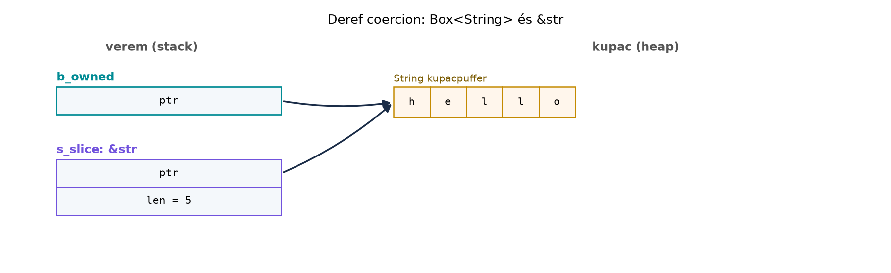

A C++-ban a konverziók, a formázás és a smart pointerek viselkedése
gyakran implicit: az egyargumentumú konstruktorok konvertálnak, az
operator<< túlterhelhető, a shared_ptr a
-> operátort túlterheli, a std::string és a
const char* között szabad az átjárás. A Rust ezeket a
műveleteket explicit, jól meghatározott trait-ekkel szabályozza. A
C++-fejlesztőnek újra kell tanulnia, hogy a konverziókat kérni kell, a
formázás a Display és Debug trait-ekkel
történik, a pointerek használatát pedig a Deref trait
biztosítja. Ez a fejezet a standard könyvtár leggyakrabban használt, az
idiómát meghatározó traitjeit veszi sorra.
Definíció. A From<T> trait a
T típusból való konverziót írja le:
fn from(value: T) -> Self. Az Into<U>
ennek a fordítottja: ha U implementálja a
From<T>-t, akkor a T típus automatikusan
implementálja az Into<U>-t. A TryFrom és
TryInto ugyanez, de a konverzió hibát adhat vissza:
fn try_from(value: T) -> Result<Self, Self::Error>.
Szabály. Saját típushoz mindig a
From-ot vagy a TryFrom-ot implementáljuk, mert
az Into/TryInto automatikusan elérhetővé
válik. A From implementációnak mindig teljesnek és
hibamentesnek kell lennie; ha a konverzió hibázhat, használjunk
TryFrom-et. A ? operátor a
From-ot használja a hibakonverzióhoz: ha a hiba típusa
E1, a függvény hibatípusa E2, és
E2 implementálja a From<E1>-et, akkor a
? automatikusan hívja az E2::from(E1)-et.
Definíció. Az AsRef<T> lehetővé
teszi egy típusból &T referencia készítését:
fn as_ref(&self) -> &T. A
Borrow<T> hasonló, de szemantikailag erősebb: a
kölcsönzött értéknek ugyanazt a hash- és egyenlőség-relációt kell
képviselnie, mint az eredeti típus. A ToOwned a
Borrow fordítottja:
fn to_owned(&self) -> Owned, ahol Owned
egy olyan típus, amely Borrow<Self>-et
implementál.
Szabály. Az AsRef-et gyakran használjuk
függvényparaméterekben, hogy a hívó rugalmasan adhasson át
String, &str vagy más típust. A
Borrow-t elsősorban a HashMap kulcstípusainál
használjuk: a HashMap<K, V> get metódusa
&Q paramétert vár, ahol
K: Borrow<Q>. Ez lehetővé teszi, hogy
String kulcsú mapet &str-rel
keressünk.
Definíció. A Display trait a
felhasználóbarát, humán olvasásra szánt formátumot írja le:
fn fmt(&self, f: &mut Formatter<'_>) -> fmt::Result.
A Debug trait a fejlesztői, diagnosztikai formátumot
szolgálja. A Debug automatikusan
derive-olható, a Display-et kézzel kell
írni.
Szabály. A Display implementálása után
a típus automatikusan elérhető a {} formátummal, a
Debug pedig a {:?}-val. A formázási makrók
(println!, format!, stb.) a
format_args! makrót használják, és a
formátum-specifikátorok a std::fmt modulban vannak. A
Debug minden típushoz legyen elérhető, a
Display-et csak akkor írjuk, ha valódi, felhasználóbarát
szöveges reprezentáció létezik.
Definíció. A Default trait az „üres”
vagy alapértelmezett értéket adja: fn default() -> Self.
A FromStr a szövegből való parsingot írja le:
fn from_str(s: &str) -> Result<Self, Self::Err>.
A str::parse metódus használja ezt a traitet.
Szabály. A Default-ot gyakran
#[derive(Default)]-vel implementáljuk, ha minden mezőnek
van Default-ja. A FromStr-t a szöveges
protokollok, parancssori argumentumok feldolgozásához használjuk, és a
hiba típusának egyértelműnek kell lennie.
Definíció. A Deref trait definiálja a
* operátor viselkedését, és lehetővé teszi a deref
coercion-t: ha a T implementálja a
Deref<Target=U>-t, akkor a &T
automatikusan &U-vá konvertálható ott, ahol a
&U típus elvárt.
Szabály. A Deref-et csak smart
pointerekhez és ahhoz hasonló „transzparens” burkolókhoz implementáljuk,
például Box<T>, Rc<T>,
String (Deref a str-re). A Deref
nem használható öröklés-szimulációra: nem helyettesíti a trait-eket, és
a deref coercion nem jelent automatikus altípus-relációt. Ha a
Deref-et túlhasználjuk, a kód nehezen olvashatóvá válik,
mert a metódushívások látszólag független típusokon futnak.
C++-ban egy egyargumentumú konstruktor implicit konverzióként
működik, hacsak nem explicit:
struct Port {
int value;
Port(int v) : value{v} {} // implicit
};
void print_port(Port p) {
std::cout << p.value << '\n';
}
print_port(8080); // működik, az int Port-tá konvertálódikRustban nincs implicit konverzió; a konverziót explicit módon kell kérni:
struct Port { value: u16 }
impl From<u16> for Port {
fn from(value: u16) -> Self {
Port { value }
}
}
fn print_port(p: Port) {
println!("{}", p.value);
}
print_port(8080.into()); // explicit konverzióA különbség: a Rust Into használata világosan jelzi a
konverziót, és a koherencia-szabályok megakadályozzák a kétértelmű vagy
nem szándékos konverziókat.
operator<< túlterhelése vs. DisplayC++-ban a std::ostream& operator<<
túlterhelése a formázás szokásos módja:
struct Port {
int value;
friend std::ostream& operator<<(std::ostream& os, const Port& p) {
return os << "port " << p.value;
}
};Rustban a Display traitet implementáljuk:
impl std::fmt::Display for Port {
fn fmt(&self, f: &mut std::fmt::Formatter<'_>) -> std::fmt::Result {
write!(f, "port {}", self.value)
}
}A Rust megoldás nincs az áramlási operátorra építve, és a formátum-specifikátorok egységesek.
std::hash és
kulcsok vs. BorrowC++-ban a std::map<std::string, int> keresésekor
std::string kulcsot kell adni, vagy a C++14 óta heterogén
keresést kell használni. A Rust HashMap<String, V>
get metódusa &str-t is elfogad a
Borrow trait miatt:
use std::collections::HashMap;
let mut map = HashMap::new();
map.insert(String::from("key"), 42);
// A get &str-t vár, mert a String Borrow<str>.
let value = map.get("key"); // &strC++-ban az osztályhierarchiák természetesek:
class Base {
public:
virtual void foo() {}
};
class Derived : public Base {};Rustban nincs implementációs öröklés; a Deref nem
pótolja:
struct Base;
impl Base {
fn foo(&self) {}
}
struct Derived { base: Base }
impl std::ops::Deref for Derived {
type Target = Base;
fn deref(&self) -> &Base {
&self.base
}
}
// Derived.foo() működik a deref coercion révén, de ez nem öröklés:
// a polimorfizmusra trait objektumok valók (lásd [Trait objektumok és dinamikus diszpécs](#r027)).A következő példában egy HostPort típust készítünk,
amely egy host:port párt reprezentál. Megmutatjuk a From,
TryFrom, Display, Debug,
Default, FromStr, AsRef
implementálását.
use std::fmt;
use std::str::FromStr;
#[derive(Debug, Clone, PartialEq, Eq, Hash, Default)]
pub struct HostPort {
pub host: String,
pub port: u16,
}
impl HostPort {
pub fn new(host: impl Into<String>, port: u16) -> Self {
HostPort { host: host.into(), port }
}
pub fn host(&self) -> &str {
&self.host
}
}
impl fmt::Display for HostPort {
fn fmt(&self, f: &mut fmt::Formatter<'_>) -> fmt::Result {
write!(f, "{}:{}", self.host, self.port)
}
}
impl From<(String, u16)> for HostPort {
fn from((host, port): (String, u16)) -> Self {
HostPort { host, port }
}
}
impl From<(&str, u16)> for HostPort {
fn from((host, port): (&str, u16)) -> Self {
HostPort { host: host.to_string(), port }
}
}
impl TryFrom<&str> for HostPort {
type Error = HostPortParseError;
fn try_from(s: &str) -> Result<Self, Self::Error> {
let (host, port_str) = s
.rsplit_once(':')
.ok_or(HostPortParseError::MissingColon)?;
let port: u16 = port_str
.parse()
.map_err(|_| HostPortParseError::InvalidPort(port_str.to_string()))?;
Ok(HostPort::new(host, port))
}
}
impl FromStr for HostPort {
type Err = HostPortParseError;
fn from_str(s: &str) -> Result<Self, Self::Err> {
HostPort::try_from(s)
}
}
impl AsRef<str> for HostPort {
fn as_ref(&self) -> &str {
&self.host
}
}
#[derive(Debug, Clone, PartialEq, Eq)]
pub enum HostPortParseError {
MissingColon,
InvalidPort(String),
}
impl fmt::Display for HostPortParseError {
fn fmt(&self, f: &mut fmt::Formatter<'_>) -> fmt::Result {
match self {
HostPortParseError::MissingColon => write!(f, "missing ':' in host:port"),
HostPortParseError::InvalidPort(s) => write!(f, "invalid port: {s}"),
}
}
}Ez a kód egy teljes, lefordítható példa. A HostPort
implementálja a From-ot tuple-ből, a
TryFrom-et &str-ből, a
FromStr-öt, a Display-t, a
Debug-ot derive-dal, a Default-ot derive-dal,
és az AsRef<str>-et. A TryFrom és a
FromStr ugyanazt a hibát használja. A példa használata:
fn main() {
let p = HostPort::from(("localhost", 8080));
println!("{}", p); // Display
println!("{:?}", p); // Debug
let parsed: HostPort = "localhost:8080".parse().unwrap();
assert_eq!(p, parsed);
let s = format!("Host: {}", p.as_ref()); // AsRef<str>
println!("{s}");
}Munkakönyvtár: ~/rust-labor/rkv/
Az rkv mintaprojektnek van Command enumja
(Get, Set, Delete,
List). A szerver és a CLI ugyanazt a parancsformátumot
használja, ezért a parancs parszolását és formázását a
Command enumra bízzuk. Implementáljuk a
FromStr és Display traiteket, valamint a
konverziós hibát.
Lépések:
rkv-core/src/lib.rs fájlt.Command enum definícióját, ha még nem
létezik. A jelenlegi verzióban legyen:#[derive(Debug, Clone, PartialEq, Eq)]
pub enum Command {
Get(String),
Set(String, Vec<u8>),
Delete(String),
List(Option<String>),
}Display-et:use std::fmt;
impl fmt::Display for Command {
fn fmt(&self, f: &mut fmt::Formatter<'_>) -> fmt::Result {
match self {
Command::Get(k) => write!(f, "GET {k}"),
Command::Set(k, v) => {
let v_str = String::from_utf8_lossy(v);
write!(f, "SET {k} {v_str}")
}
Command::Delete(k) => write!(f, "DEL {k}"),
Command::List(prefix) => match prefix {
Some(p) => write!(f, "LIST {p}"),
None => write!(f, "LIST"),
},
}
}
}#[derive(Debug, Clone, PartialEq, Eq)]
pub enum CommandParseError {
EmptyLine,
UnknownCommand(String),
MissingKey,
MissingValue,
InvalidUtf8Value,
}
impl fmt::Display for CommandParseError {
fn fmt(&self, f: &mut fmt::Formatter<'_>) -> fmt::Result {
match self {
CommandParseError::EmptyLine => write!(f, "empty command line"),
CommandParseError::UnknownCommand(s) => write!(f, "unknown command: {s}"),
CommandParseError::MissingKey => write!(f, "missing key"),
CommandParseError::MissingValue => write!(f, "missing value"),
CommandParseError::InvalidUtf8Value => write!(f, "invalid UTF-8 value"),
}
}
}
impl std::error::Error for CommandParseError {}FromStr-öt:use std::str::FromStr;
impl FromStr for Command {
type Err = CommandParseError;
fn from_str(line: &str) -> Result<Self, Self::Err> {
let trimmed = line.trim();
if trimmed.is_empty() {
return Err(CommandParseError::EmptyLine);
}
let mut parts = trimmed.split_whitespace();
let verb = parts.next().unwrap(); // a split_whitespace mindig ad legalább egyet
match verb {
"GET" => {
let key = parts.next().ok_or(CommandParseError::MissingKey)?;
if parts.next().is_some() {
return Err(CommandParseError::UnknownCommand(verb.to_string()));
}
Ok(Command::Get(key.to_string()))
}
"SET" => {
let key = parts.next().ok_or(CommandParseError::MissingKey)?;
let value = parts.next().ok_or(CommandParseError::MissingValue)?;
if parts.next().is_some() {
return Err(CommandParseError::UnknownCommand(verb.to_string()));
}
Ok(Command::Set(key.to_string(), value.as_bytes().to_vec()))
}
"DEL" => {
let key = parts.next().ok_or(CommandParseError::MissingKey)?;
if parts.next().is_some() {
return Err(CommandParseError::UnknownCommand(verb.to_string()));
}
Ok(Command::Delete(key.to_string()))
}
"LIST" => {
let prefix = parts.next();
if parts.next().is_some() {
return Err(CommandParseError::UnknownCommand(verb.to_string()));
}
Ok(Command::List(prefix.map(|s| s.to_string())))
}
_ => Err(CommandParseError::UnknownCommand(verb.to_string())),
}
}
}#[cfg(test)]
mod tests {
use super::*;
#[test]
fn parse_get() {
let cmd: Command = "GET key".parse().unwrap();
assert_eq!(cmd, Command::Get("key".to_string()));
}
#[test]
fn parse_set() {
let cmd: Command = "SET key value".parse().unwrap();
assert_eq!(cmd, Command::Set("key".to_string(), b"value".to_vec()));
}
#[test]
fn parse_unknown() {
let result: Result<Command, _> = "FOO bar".parse();
assert!(matches!(result, Err(CommandParseError::UnknownCommand(_))));
}
#[test]
fn display_roundtrip() {
let cmd = Command::List(Some("pre".to_string()));
let display = cmd.to_string();
let parsed: Command = display.parse().unwrap();
assert_eq!(cmd, parsed);
}
}cargo test -p rkv-coreVárt kimenet: minden teszt sikeres, a Display és
FromStr kerek utat alkot.
Továbbvitt eredmény. Ez a Command
FromStr és Display implementáció a Az rkv hálózati szerver: TCP, protokoll, kecses
leállás alfejezetben a szöveges protokoll parszolásának alapja lesz;
a CommandParseError a Command hibájaként
szolgál. A From/TryFrom konverziókat a C ABI: extern “C”, repr(C), bindgen és cbindgen
alfejezet a FFI-határon használja, az
AsRef/Borrow mintákat pedig az API-tervezés Rustban: irányelvek és ergonómia
alfejezet viszi tovább.
A memóriaábra a Deref coercion mechanizmusát
szemlélteti:

Az ábra mellett: a Box<String> deref coercion
révén &String-et &str-re konvertál,
anélkül, hogy a tulajdonjog vagy a kupac adat másolódna. A
Deref trait teszi ezt lehetővé, de csak smart pointerek
esetén indokolt.
Deref öröklés-szimulációra. C++-fejlesztők
gyakran próbálják a Deref segítségével utánozni az
osztályhierarchiát: struct Derived { base: Base } és
impl Deref for Derived { type Target = Base; ... }. Ez
működik a metódushívásoknál, de nem ad valódi polimorfizmust, nem
működik a trait-objektumokkal, és a deref coercion rejtett függőségeket
okoz. Ilyenkor inkább kompozíciót és trait-eket használjunk, vagy ha
dinamikus diszpécsre van szükség, dyn Trait-et.
Túlzott AsRef használat generikus függvényekben.
Az AsRef<str> gyakran hasznos, de ha egy függvény
minden paraméterét AsRef-re vesszük, a generikus kód
feleslegesen bonyolulttá válik, és a fordítási idő nő. Egyszerű esetben
fogadjunk el konkrét típust (pl. &str), és a hívónál
alkalmazzunk .as_ref()-t.
Debug és Display összekeverése. A
{} formátum a Display-et, a {:?}
a Debug-ot használja. Ha egy típus nem implementálja a
Display-et, a {} nem működik, és a fordító
hibát jelez (E0277, verziófüggő). Ne írjunk Display-et csak
azért, hogy a println! működjön; ha nincs emberi olvasásra
szánt reprezentáció, használjunk Debug-ot.
Hibás From-impl koherencia. A
koherencia-szabályok miatt nem implementálhatunk
From<T>-t olyan T-re, amely nem a saját
crate-ünkben van. Ez nem hiba, hanem szándékos; a konverziókat a saját
típusunkra implementáljuk, nem idegen típusra.
Az alábbi kódban a Foo típus implementálja a
Deref-et a String-re. Lefordul-e a
println! hívás? Miért?
use std::ops::Deref;
struct Foo {
s: String,
}
impl Deref for Foo {
type Target = String;
fn deref(&self) -> &String {
&self.s
}
}
fn main() {
let f = Foo { s: String::from("hello") };
println!("{}", f);
}Írd át a következő C++ kódot idiomatikus Rustra, használva a
From/TryFrom, Display és
Default traiteket:
#include <string>
#include <iostream>
class Config {
public:
std::string name;
int threads;
Config() : name("default"), threads(1) {}
Config(std::string n, int t) : name(std::move(n)), threads(t) {}
};
void print_config(const Config& c) {
std::cout << c.name << " (" << c.threads << " threads)\n";
}
int main() {
Config c1;
Config c2{"server", 4};
print_config(c1);
print_config(c2);
}Az rkv-core Error enumjához (thiserror) implementálj
From-ot a std::io::Error, a
serde_json::Error és a CommandParseError
típusokra, hogy a ? operátor automatikusan konvertálja a
hibákat. Írj hozzá teszteket, amelyek ellenőrzik a hibaüzeneteket.
A Store típusnak van get metódusa, amely
jelenleg &str kulcsot vár. Változtasd meg a metódust,
hogy Q: Borrow<str> paramétert fogadjon el, így
String-gel is lehessen keresni. Írd meg a szükséges
Borrow implementációt, és magyarázd el, miért jobb ez az
AsRef<str>-nél.
Nem fordul le, mert a Foo típus nem implementálja a
Display-et, és a println! a {}
formátummal a Display traitet igényli. A Deref
a String-re nem ad automatikusan Display
implementációt. Javítás: println!("{:?}", f); ha a
Debug implementálva van, vagy implementáljuk a
Display-et.
#[derive(Debug, Clone, Default)]
pub struct Config {
pub name: String,
pub threads: u32,
}
impl Config {
pub fn new(name: impl Into<String>, threads: u32) -> Self {
Config { name: name.into(), threads }
}
}
impl std::fmt::Display for Config {
fn fmt(&self, f: &mut std::fmt::Formatter<'_>) -> std::fmt::Result {
write!(f, "{} ({} threads)", self.name, self.threads)
}
}
// Ha szükséges, From<(&str, u32)> implementálható.
impl From<(&str, u32)> for Config {
fn from((name, threads): (&str, u32)) -> Self {
Config::new(name, threads)
}
}
fn main() {
let c1 = Config::default();
let c2 = Config::from(("server", 4));
println!("{}", c1);
println!("{}", c2);
}Részlet az rkv-core/src/lib.rs-ből:
use thiserror::Error;
#[derive(Debug, Error)]
pub enum Error {
#[error("IO error: {0}")]
Io(#[from] std::io::Error),
#[error("JSON error: {0}")]
Json(#[from] serde_json::Error),
#[error("command parse error: {0}")]
CommandParse(#[from] CommandParseError),
#[error("key not found: {0}")]
KeyNotFound(String),
}A #[from] attribútum a thiserror crate-ben automatikusan
From-ot generál. A ? operátor használata
std::io::Error esetén automatikusan
Error::Io-vá konvertál.
A Store::get szignatúrája:
use std::borrow::Borrow;
use std::hash::Hash;
impl Store {
pub fn get<Q>(&self, key: &Q) -> Option<&Vec<u8>>
where
String: Borrow<Q>,
Q: Hash + Eq + ?Sized,
{
self.inner.get(key)
}
}Miért jobb a Borrow, mint az AsRef? Az
AsRef csak a konverziót ígéri, a Borrow pedig
garantálja, hogy a konvertált érték ugyanazt a hash és egyenlőség
relációt képviseli, mint az eredeti típus. Ez elengedhetetlen a
HashMap kulcsoknál, hogy a &str kulccsal
történő keresés ugyanazt a hash értéket adja, mint a String
kulcs.
Az idiomatikus Rust-kód a konverziókat, formázást és
pointer-viselkedést a standard trait-ekkel szabályozza. A
From/Into és
TryFrom/TryInto a hibamentes, illetve hibás
konverziókat írja le; a ? operátor a From-on
keresztül konvertálja a hibákat. Az AsRef rugalmas
paraméterátadást tesz lehetővé, a Borrow a
HashMap kulcsainál garantálja a hash- és
egyenlőség-konzisztenciát. A Display a felhasználói, a
Debug a diagnosztikai formátum; a Default az
alapértelmezett értéket ad, a FromStr szövegből parse-ol. A
Deref smart pointerekhez való, nem öröklés-szimulációra. A
laborban a Command enum FromStr és
Display implementációja készült el az
rkv-core/src/lib.rs fájlban, a
CommandParseError hibával. Továbbvitt
eredmény. A Command FromStr kódját a Az rkv hálózati szerver: TCP, protokoll, kecses
leállás alfejezet használja, a
From/TryFrom konverziók az API-tervezés Rustban és a C
ABI alfejezetekben térnek vissza.
A fejezet a standard könyvtár stabil traitjeire épül:
From, Into, TryFrom,
TryInto, AsRef, Borrow,
ToOwned, Display, Debug,
Default, FromStr, Deref. A
thiserror crate #[from] attribútuma a
hivatalos dokumentáció szerint működik; a pontos verzió a
Cargo.toml-ben rögzítendő. A Command enum és a
CommandParseError definíciója az rkv rkv-core
crate-jében található, a korábbi alfejezetekkel konzisztens. A példakód
a 2021-es és 2024-es edition szerint is lefordítható, de a
thiserror API-kat ellenőrizni kell a használt toolchainen.
A Borrow generikus szignatúra pontos formáját a standard
dokumentációban ellenőrizni kell.